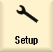
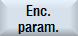

Calling the basic setting dialog
Procedure
|  | 1. | Select the "Setup" operating area. |
  | 2. | Press the menu forward key and the "Safety" softkey. |
| | 3. | Press the "Settings" softkey. |
|  Mechanical configuration/actual value acquisition | 4. | For each drive, the required basic setting ranges can be called using softkeys with the same name. Press the appropriate softkey: |
  | 5. | Select the required drive using softkey "Drive+", or "Drive-". - OR - |
  | | Press the "Select drive" softkey. This softkey is only visible if there are several drives. A selection of all of the axes and drives that exist in the drive system is displayed. Select the required drive. Press the "OK" softkey to complete the drive selection. |